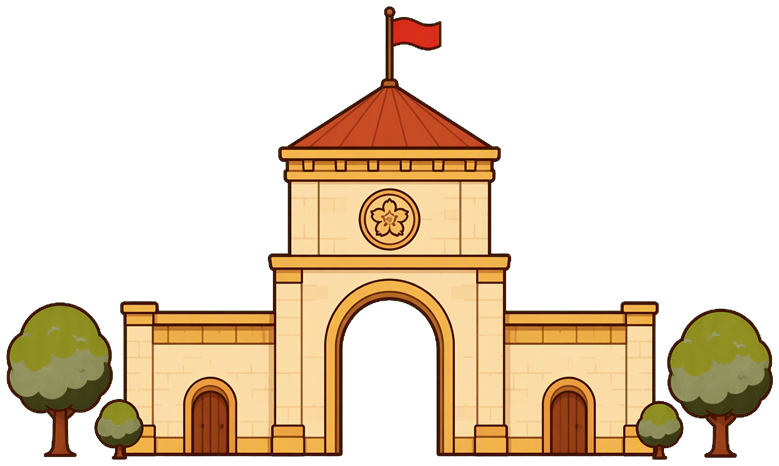
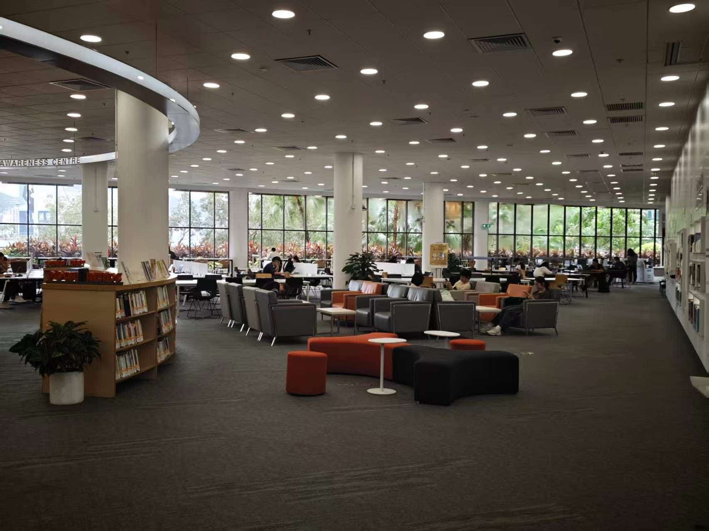

你好
今天想说的，
都可以放在这里
食堂哪道菜最好吃？
图书馆窗外的晚霞，想给谁看？
🙂 想署名就署名
🌙 想匿名就匿名

🏙 我的城市圈
去广场看选一个片区，广场会把你这一片的分享排在前面 —— 内容还是全站的， 只是先看身边的。圈子只存在这台设备上，不绑定账号。
🍂 最新分享
全部这里是一个什么样的地方？
这里没有全站热搜，也没有排名，更没有「必须精彩」的压力。
你可以分享今天食堂哪道菜好吃、图书馆窗外的晚霞、一道卡了很久的题、
或者只是想说一句"今天有点累"。
想匿名就匿名，想留名字就留名字。
每个城市圈里会挑几个最近被同学提到的词（至少要有两个人提到才算），
它不排名、不计数，点一下就是去找提到这个词的分享。
每条分享会先经过一次人工审核再出现在广场上；看到不合适的内容，卡片右上角的「⋯」菜单里可以举报。